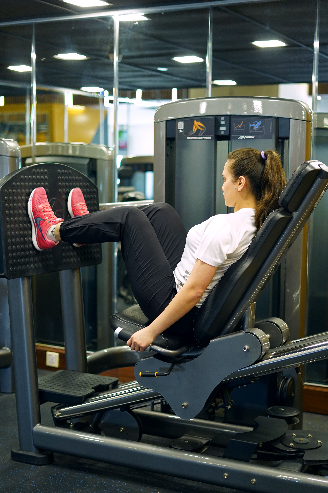
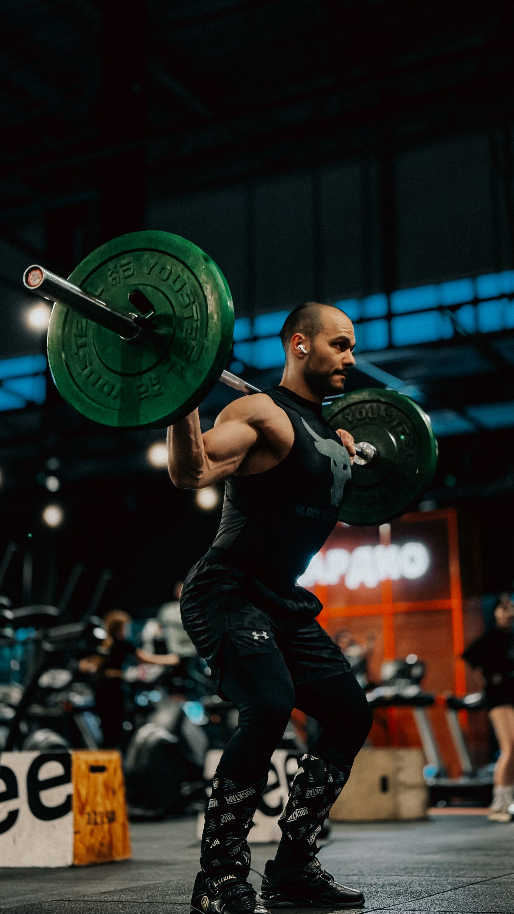

Find Your Workout Plan
Whether you are new to exercising or have years of
experience in the gym, finding the right workout
routine is an important part of reaching your goals.
Fitness Unity offers three training levels to help
you improve strength, build muscle, and develop
a consistent fitness routine.
Choose a program that matches your current
experience. Focus on proper technique, consistency,
and gradually increasing the difficulty of your
workouts as you become stronger.
Beginner Workout Program

Push / Pull / Legs
The beginner program is designed for people
starting their fitness journey. It introduces
basic strength exercises through a three-day
Push, Pull, and Legs routine.
Start with lighter weights and focus on learning
proper form. Rest at least one day between
workouts, and gradually increase your weights
as the exercises become easier.
Weekly Schedule
| Day |
Workout |
| Monday | Push |
| Tuesday | Rest |
| Wednesday | Pull |
| Thursday | Rest |
| Friday | Legs |
| Saturday | Optional Walking |
| Sunday | Rest |
Day 1: Push (Chest, Shoulders, Triceps)
- Bench Press - 3 sets of 8-12 reps
- Seated Shoulder Press - 3 sets of 10 reps
- Incline Dumbbell Press - 2 sets of 10 reps
- Lateral Raises - 2 sets of 12-15 reps
- Triceps Pushdowns - 2 sets of 12 reps
Day 2: Pull (Back, Biceps)
- Lat Pulldowns - 3 sets of 10 reps
- Seated Cable Rows - 3 sets of 10 reps
- Face Pulls - 2 sets of 12-15 reps
- Dumbbell Biceps Curls - 3 sets of 10 reps
- Hammer Curls - 2 sets of 12 reps
Day 3: Legs (Quads, Hamstrings, Glutes)
- Goblet Squats - 3 sets of 10 reps
- Leg Press - 3 sets of 10 reps
- Leg Curls - 3 sets of 12 reps
- Calf Raises - 3 sets of 15 reps
- Plank - 3 sets of 20-30 seconds
Beginner Tip: Rest 60-120 seconds between sets.
Begin with manageable weights and prioritize
correct exercise form over lifting heavier.
Advanced Workout Programs

Advanced training is designed for experienced
individuals who have developed consistent exercise
habits and want to focus on specific fitness goals.
Choose the training approach that best matches
your goals, whether that involves increasing
muscle size, losing body fat, developing strength,
improving conditioning, or bodybuilding.
Muscle Building / Bulking
Focus on progressive overload, sufficient
recovery, and a moderate calorie surplus
to support muscle growth.
Example 5-Day Schedule
- Monday: Push - Chest, Shoulders, Triceps
- Tuesday: Pull - Back, Biceps
- Wednesday: Legs - Quads, Hamstrings, Glutes
- Thursday: Rest
- Friday: Upper Body - Compound Exercises
- Saturday: Lower Body - Legs and Core
- Sunday: Rest
Main exercises include bench presses, squats,
rows, pull-ups, and Romanian deadlifts.
Perform 3-4 sets of 6-12 reps for most
exercises, adjusting volume and recovery
based on performance.
Cutting / Fat Loss
The goal of cutting is to reduce body fat
while maintaining as much muscle and
strength as possible.
Example Weekly Schedule
- Monday: Upper Body Strength
- Tuesday: Lower Body Strength
- Wednesday: Moderate Cardio
- Thursday: Upper Body Hypertrophy
- Friday: Lower Body Hypertrophy
- Saturday: Walking or Cycling
- Sunday: Rest
Continue resistance training with 3-4 sets
of 6-12 reps on major exercises. Combine
training with a manageable calorie deficit,
adequate protein, and sustainable cardio.
Strength Training
Strength-focused training emphasizes
increasing performance in major compound
exercises such as squats, bench presses,
and deadlifts.
Example 4-Day Schedule
- Monday: Heavy Squats - 4 sets of 3-5 reps
- Tuesday: Heavy Bench Press - 4 sets of 3-5 reps
- Wednesday: Rest
- Thursday: Deadlifts - 3 sets of 3-5 reps
- Friday: Overhead Press - 4 sets of 5 reps
- Saturday: Light Recovery Activity
- Sunday: Rest
Complete each lifting day with 2-3 accessory
exercises for supporting muscle groups.
Rest 2-4 minutes between heavy sets and
avoid sacrificing technique for weight.
Bodybuilding / Hypertrophy
Bodybuilding training focuses on developing
muscle size, proportions, and balanced
muscular development.
Example 5-Day Schedule
- Monday: Chest and Triceps
- Tuesday: Back and Biceps
- Wednesday: Legs and Calves
- Thursday: Rest
- Friday: Shoulders and Arms
- Saturday: Full Body Weak-Point Training
- Sunday: Rest
Use a combination of compound movements and
isolation exercises. Most exercises can
include 3-4 sets of 8-15 repetitions,
with attention to controlled movement
and adequate recovery.
Cardiovascular / Endurance Training
This program focuses on improving cardiovascular
endurance, stamina, and overall conditioning.
It can include running, cycling, rowing,
and interval training.
Example Weekly Schedule
- Monday: Easy Run - 30 minutes
- Tuesday: Full Body Strength Training
- Wednesday: Cycling - 40 minutes
- Thursday: Interval Training - 20 minutes
- Friday: Rest
- Saturday: Longer Easy Run - 45-60 minutes
- Sunday: Walking and Mobility
Adjust intensity according to your fitness
level. Increase endurance gradually and
include easier sessions between more
demanding workouts.
Advanced Tip: These are example programs, not
requirements to train every day. Adjust weekly
volume, exercise selection, and recovery based
on your experience and individual needs.